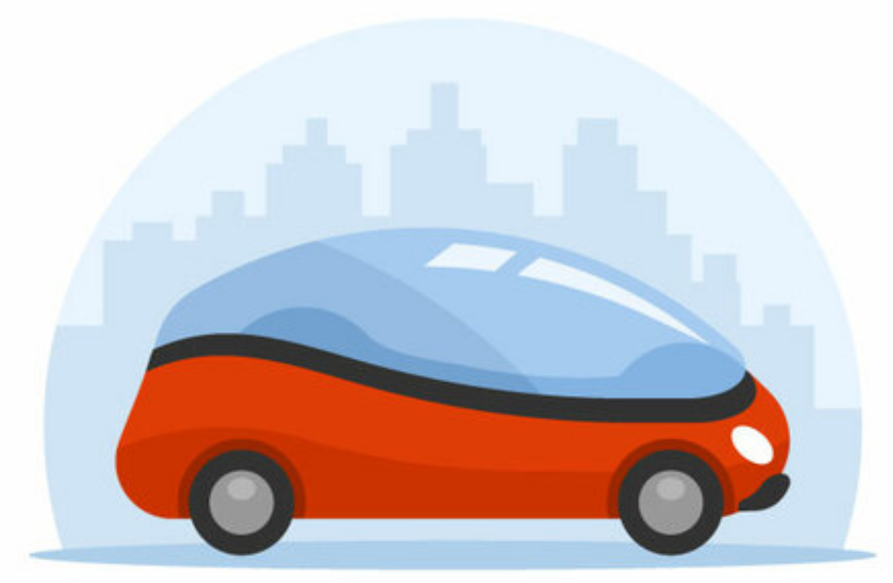

Diccionario
Robótica
- Definición:
-
Rama de la ciencia y la tecnología que se ocupa del diseño, construcción y aplicación de los robots.
- Ejemplo:
-
La robótica está evolucionando mucho en los últimos años.


¡Hola! Estoy encantado de volver a estar con todos vosotros y vosotras.Este reto está relacionado con el movimiento, la seguridad y la robótica.
La semana pasada recibimos la visita de nuestros mayores de la residencia. Vinieron para compartir sus experiencias y durante la visita tuvimos un pequeño percance: una de las personas mayores que venía en silla de ruedas, al maniobrar, no vio un obstáculo que quedaba justo detrás de él y ... Tranquilos, todo quedó un susto.
Después de la charla nos comentaron que sería muy interesante poder acoplar algún sistema robótico que pudiera avisar de los obstáculos, el gran reto será el de evitar posibles accidentes. Cuando llegues al final de este apasionante camino, descubrirás qué elemento deberás añadir y dónde.
Creo que somos las personas indicadas para solucionar este problema y de camino ayudar a nuestros mayores.
¿Estáis preparadas y preparados para este nuevo desafío?
Definición:
Rama de la ciencia y la tecnología que se ocupa del diseño, construcción y aplicación de los robots.
Ejemplo:
La robótica está evolucionando mucho en los últimos años.
¿Movimiento, seguridad y robótica?
Creo que necesitamos la ayuda de algo especial.
Vamos a ver el siguiente vídeo, estoy seguro que os va a interesar:
Recuerda que puedes activar los subtítulos si lo necesitas.
¿La ITV?, nos referimos a la Inspección Técnica de Vehículos.
Nosotros la vamos a realizar pasando el siguiente test al vehículo que aparecía en el vídeo anterior:
Obra publicada con Licencia Creative Commons Reconocimiento Compartir igual 4.0